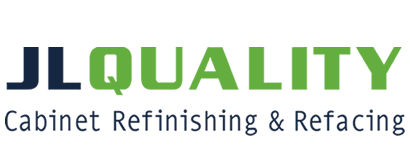

| |
Edmonds Community College
Web Application and Cloud Development ATA Program
Areas of Study / Skills
Database Theory & Design
Web Development I
Inter Business Computing
HTML
Javascript
CSS
PHP
VBA
SDLC
SQL
NoSQL
Systems Analysis
Database Design and Normalization
Git Hub
GUI Web Tools
Swiss and Modern Design Principles
Customer Service
Data Extraction and Analysis
Spreadsheets
Charts
Proficient In:
- MS Word
- MS Excel
- MS Power Point
- MS Access
Working Knowledge:
- MS SQL Server
- MS IIS
- Xampp
- Apache Server
Portfolio:

|
Available for a position with a company as a Website Developer. I have long wished to work for a company that desires an employee with a strong work ethic, is trustworthy, stays on task, and loves the work. I would like to work on e-commerce websites as well as small business websites, designing, wire-framing, and assisting customers in making the tedious process of building a website easy to understand and follow. Strong customer focus and a love for the day to day work involved in bringing a website or a database management system through implementation, testing and final roll-out and training. I thrive on finding solutions and work tirelessly to do so in every case.
Employment History
Puget Sound Energy
2011-2017
Positions Held:
- Customer Service Representative - 2011-2013
- Program Implementer - 2013-2014
- Associate Business Support Analyst - 2015
- Business Analyst - 2015-2016
- Customer Construction Representative 2017-2017
Special Projects & Awards
- Diamond Award
- Nominated by management, I was awarded the Puget Sound Energy Diamond Award for my work in creating a tool for thorough and accurate customer interaction documentation. The Excel based tool made full notes, calculated payment arrangement amounts, and walked agents through a very specific reconnection process. The call center was required to use this tool.
-
- Dragon Naturally Speaking Project
- My work using VBA on the Interaction Record Tool led to working on macro creations for Dragon Naturally Speaking software that allowed users with disabilities to speak commands to the computer for customer service processes. The unique challenge that I had to solve was the lack of a mute button to allow a user agent to speak the commands using phrases in conversations with the customer. I had great success in the project until I was offered a promotion into Energy Efficiency
Work Performed
- Customer service over the phone involving all customer service issues
- Process rebates for business and residential customers
- Performed inspections on rebate projects to ensure correct measure counts
- Followed up on failed verification inspections from the Verification team
- Assist other team members with their workloads
- Create documentation and calculation tools for customer construction agents and project managers
- Review, Document and Analyze current business process for the construction department
- Create, maintain and train new tools created for the project managers and field teams
- Report on project time lines and project statuses
- Work with other teams to ensure proper implementations and roll outs of tools and process documents
- Assist residential and business customers, contractors and vendors with various aspects of construction issues
- Create, cancel or update orders for construction projects
Evergreen Tree Care
2011-2011
Positions Held:
Work Performed
- Use given territory map to visit customers in their home to set appointments for company Arborists
- Discuss tree care, including limb trimming and removal
|
|